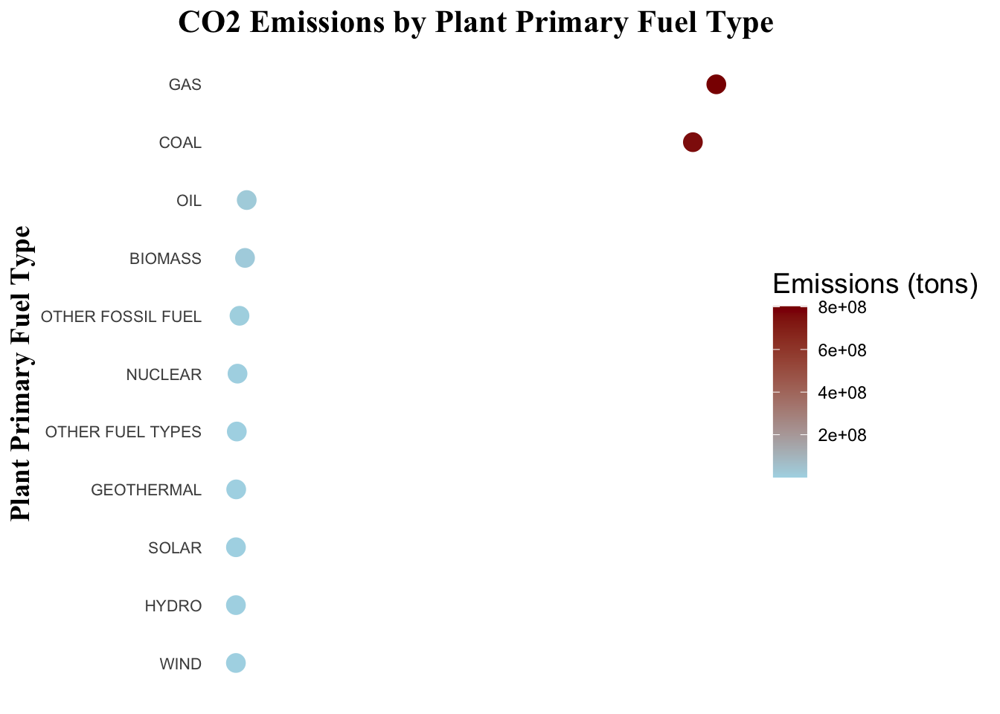
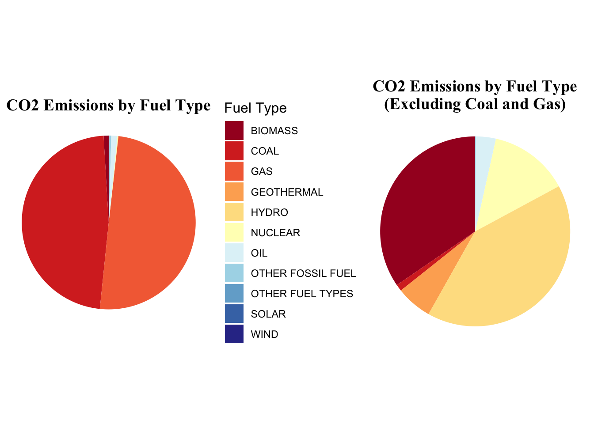
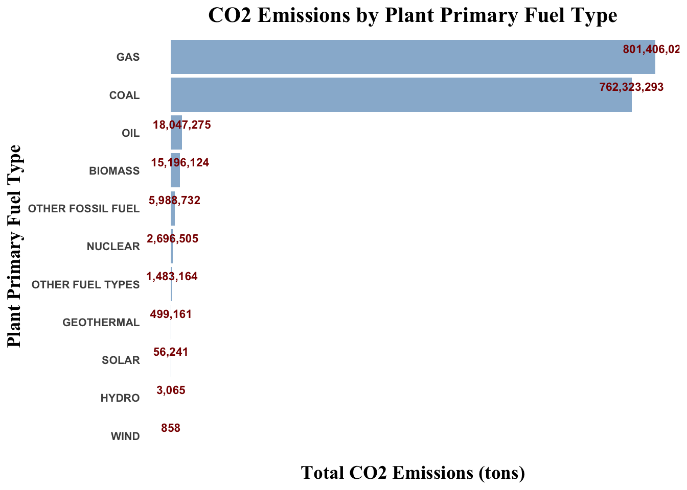

Energy Carbon Dioxide Emissions
What are the major sources of CO2 emissions across U.S. power plants, and how do these sources vary?
With ongoing efforts to combat climate change, understanding the sources of CO2 emissions has been an interest of mine for quite a while. We are at a critical point in time where exploring data and forming effective strategies to mitigate future damage is essential. The energy sector is a major contributor to these emissions, in particular power plants, with different fuel types playing distinct roles both individually and collectively. In this blog post, I aim to explore what the major sources of CO2 emissions across U.S. power plants are and how these sources differ based on plant fuel types. Using the eGrid 2023 dataset, which includes data on plant primary fuel types, and CO2 emissions, among many other variables that are too vast to fully explore in one post. This analysis will offer valuable insights into the distribution of emissions from visualizations tailored for different audiences, with the goal of uncovering trends in CO2 emissions across fuel types and power plants. Ultimately, the insights gained here aim to provide actionable information for the fight against climate change.
The data in this analysis is from the US Environmental Protection Agency Emissions & Generation Resource Integrated Database (eGRID) for the year 2023. The data contains key variables such as:
Plant primary fuel category, which indicates whether a plant uses coal, natural gas, nuclear energy, or other fuels.
Plant annual CO2 emissions (tons), which serves as the primary metric for quantifying emissions.
To answer the overarching question the analysis is broken down into several sub-questions tailored for different audiences.
For technical experts, the focus will be on quantifying the total CO2 emissions by plant primary fuel type to understand the specific contribution of each fuel category.
Policy makers will benefit from knowing how different fuel types contribute to total CO2 emissions in proportion to each other, providing insights into where regulatory efforts could be most impactful.
Finally, for the general public, the goal is to highlight which fuel types have the highest total CO2 emissions and compare these emissions in an accessible way.
Technical Experts
Scatter Plot
In this first visualization, I aim to show how CO2 emissions vary across different fuel types used by power plants in the U.S. The primary goal is to highlight the contribution of each fuel category to the overall CO2 emissions from these plants. By using the Plant primary fuel category variable, the scatter plot in this visualization represents the total CO2 emissions for each fuel type. Each point corresponds to one of the major fuel types, with the amount of the emissions shown for each fuel category. Instead of displaying individual plants, emissions are aggregated at the fuel type level, meaning that each point represents the total emissions from all plants using that particular fuel type. This gives a clear comparison of how much CO2 emissions are being contributed by each fuel category overall.
Policy Makers
Pie Charts
In this section, I aim to visualize how CO2 emissions vary across different fuel types used by U.S. power plants, with a specific focus on the implications for policymakers. The goal is to highlight the contributions of each fuel category to the overall CO2 emissions and provide insights that can help guide regulatory decisions. The first pie chart illustrates the total CO2 emissions across U.S. power plants, broken down by fuel type. This chart includes all fuel categories, such as coal, natural gas, nuclear, and other sources of energy.

To provide a more targeted approach, the second pie chart excludes coal and natural gas, giving policymakers a clearer picture of emissions from renewable and low-emission sources like biomass, hydro, and nuclear energy. By comparing these two pie charts, policymakers can better understand the emissions from major fossil fuel sources and identify opportunities to promote cleaner energy alternatives. Additionally, this comparison helps to highlight the potential impact of shifting regulatory focus toward non-fossil fuels, which have lower or zero emissions.
General Public
Bar plot
In this final visualization, the goal is to present a straightforward and easily understandable comparison of CO2 emissions across different fuel types used by U.S. power plants. The bar plot visually represents the total CO2 emissions (in tons) for each fuel type, making it clear which sources are the largest contributors to CO2 emissions in power generation. For the general audience, this plot emphasizes the fuel categories that have the most significant environmental impact, helping to highlight which fuels, like coal and natural gas, contribute the most to climate change through their CO2 emissions.

Design considerations for three types of audiences
Together, these visualizations tell an important story about the sources of CO2 emissions from power plants and their implications for climate change. By adapting the designs to different audiences, technical experts, policymakers, and the general public, I’ve been able to make the data accessible and actionable. The combination of thoughtful design choices, clear messaging, and attention to accessibility ensures that the insights from these visualizations can be understood by everyone.
Below I highlight in an outline format the design decisions
The mix of chart types (ie. scatter plots, pie charts, and bar plots) best convey the data to each specific audience based on the interest of each.
Each plot includes clear titles, labels, and annotations to ensure the message is easy to understand keeping consistency throughout (ie. center titles, fonts, text color).
Unnecessary grid lines and other unnecessary plot elements (ie. x axis text) are removed, ensuring that the visualizations stay clean and easy to interpret.
The color choices are intentionally designed for aesthetic appeal, consistency with a focus on the clarity of the message, and accessibility.
Fonts are selected for readability, such as bold Times New Roman for titles and axis labels to make them stand out, and Arial for axis text to maintain clarity and legibility.
The layout is carefully arranged to ensure that text and plot elements are evenly spaced, with text oriented in a way that makes it easy to read and interpret.
Visualizations are tailored to the audience based on the focus of each to explore emission for plant primary fuel type in the US.
The message is centered on CO2 emissions from primary fuel types eliminating confusion of other variables and clarifying the issue.
Besides color, alt text is included for all images to make the visualizations accessible to individuals using screen readers.
DEI lens was not fully applicable for the visualizations because specific regions of the US were not addressed.
Click to view code for data visualizations
library(readxl)
library(dplyr)
library(ggplot2)
library(gridExtra)
library(RColorBrewer)
library(gridExtra)
# Load in excel file
sheet_names <- excel_sheets("data/egrid2023_data_rev1.xlsx")
# Print the sheet names
print(sheet_names)
# Read in necessary data from a specific sheet
data_sheet <- read_excel("data/egrid2023_data_rev1.xlsx", sheet = "PLNT23")
# Save column names to a .txt file to view
write(colnames(data_sheet), "column_names.txt")
# Summarize CO2 emissions by plant primary fuel type
fuel_emissions_summary <- data_sheet %>%
# Select only the relevant columns: fuel category and CO2 emissions
select(`Plant primary fuel category`, `Plant annual CO2 emissions (tons)`) %>%
# Convert all columns starting with "Plant annual" to numeric values
mutate(across(starts_with("Plant annual"), as.numeric)) %>%
# Remove rows with any missing values
na.omit() %>%
# Group data by the primary fuel category
group_by(`Plant primary fuel category`) %>%
# Summarize total CO2 emissions for each fuel category
summarize(total_CO2_emissions = sum(`Plant annual CO2 emissions (tons)`, na.rm = TRUE)) %>%
# Replace abbreviations with full names
mutate(`Plant primary fuel category` = dplyr::recode(`Plant primary fuel category`,
"OFSL" = "OTHER FOSSIL FUEL",
"OTHF" = "OTHER FUEL TYPES"))
#| fig-alt: A scatter plot showing the total CO2 emissions by plant primary fuel type, with points colored according to emission values. The size of the points is uniform, and the color gradient ranges from light blue for low emissions to dark red for high emissions. The plot provides a visual comparison of emissions across different fuel types.
#| fig-cap: A scatter plot displaying CO2 emissions for various plant primary fuel types.
# Create a scatter plot of CO2 emissions by plant primary fuel type
plot1 <- ggplot(fuel_emissions_summary, aes(x = total_CO2_emissions,
y = reorder(`Plant primary fuel category`, total_CO2_emissions))) +
# Plot points with color based on total CO2 emissions and adjust point size
geom_point(aes(color = total_CO2_emissions), size = 4) +
# Set a color gradient from light blue to dark red based on emissions
scale_color_gradient(low = "lightblue", high = "darkred") +
# Set plot labels
labs(
title = "CO2 Emissions by Plant Primary Fuel Type", # Title of the plot
x = "Total CO2 Emissions (tons)", # Label for x-axis
y = "Plant Primary Fuel Type", # Label for y-axis
color = "Emissions (tons)" # Legend title for the color scale
) +
# Apply a minimal theme (no background)
theme_minimal() +
# Format the x-axis with commas for better readability
scale_x_continuous(labels = scales::comma) +
# Customize various elements of the plot for styling
theme(
axis.text.x = element_blank(), # Remove x-axis labels
axis.title.x = element_blank(), # Remove x-axis title
axis.text.y = element_text(size = 8, family = "Arial"), # Set y-axis text size and font
axis.title.y = element_text(size = 14, family = "Times New Roman", face = "bold"), # Set y-axis title font and style
plot.title = element_text(hjust = 0.5, size = 16, family = "Times New Roman", face = "bold"), # Center and style the title
legend.title = element_text(size = 14, family = "Arial"), # Set legend title font
legend.text = element_text(family = "Arial"), # Set legend text font
legend.position = "right", # Position the legend on the right
panel.grid = element_blank() # Remove grid lines from the plot
) +
# Format the color legend to use commas in the color bar labels
guides(
color = guide_colorbar(label = scales::comma) # Add commas to color bar labels
)
print(plot1)
#| fig-alt: Two side-by-side pie charts depicting CO2 emissions by plant primary fuel type. The first chart shows emissions by all fuel types, while the second excludes COAL and GAS, with both charts using a custom red-yellow-blue color palette. Emission values are represented by slices of the pie, with the charts highlighting the distribution of emissions across different fuel types.
#| fig-cap: The left pie chart shows the distribution of CO2 emissions from various fuel types, including COAL and GAS, while the right chart focuses on emissions without COAL and GAS sources, emphasizing a cleaner energy mix.
# Custom color palette using "RdYlBu" from RColorBrewer
fuel_type_colors <- brewer.pal(11, "RdYlBu") # Red-Yellow-Blue palette with 11 colors
# Calculate percentages for CO2 emissions by fuel type
fuel_emissions_summary <- fuel_emissions_summary %>%
mutate(percentage = round(total_CO2_emissions / sum(total_CO2_emissions) * 100, 1))
# Plot 1: Pie chart showing CO2 emissions by all fuel types, including Coal and Gas
first_plot <- ggplot(fuel_emissions_summary, aes(x = "", y = total_CO2_emissions, fill = `Plant primary fuel category`)) +
geom_bar(stat = "identity", width = 1) + # Bar chart converted into a pie chart
coord_polar(theta = "y") + # Create polar coordinates for a pie chart
labs(
title = "CO2 Emissions by Fuel Type", # Title for plot 1
fill = "Fuel Type" # Legend title
) +
scale_fill_manual(values = fuel_type_colors) + # Apply custom color palette
theme_void() + # Remove axis and background for a clean look
theme(
legend.title = element_text(family = "Arial", size = 12), # Style legend title
legend.position = "right", # Position legend on the right
plot.title = element_text(hjust = 0.5, family = "Times New Roman", size = 14, face = "bold") # Title style
)
# Plot 2: Pie chart excluding Coal and Gas, using the same custom colors
fuel_emissions_filtered <- fuel_emissions_summary %>%
filter(!`Plant primary fuel category` %in% c("COAL", "GAS")) # Filter out coal and gas
second_plot <- ggplot(fuel_emissions_filtered, aes(x = "", y = total_CO2_emissions, fill = `Plant primary fuel category`)) +
geom_bar(stat = "identity", width = 1) + # Bar chart in a pie chart format
coord_polar(theta = "y") + # Polar coordinates for pie chart
labs(
subtitle = "CO2 Emissions by Fuel Type\n(Excluding Coal and Gas)", # Subtitle for plot 2
fill = "Fuel Type" # Legend title for plot 2
) +
scale_fill_manual(values = fuel_type_colors) + # Apply custom colors
theme_void() + # Remove unnecessary elements
theme(
legend.title = element_blank(), # Remove legend title for plot 2
legend.position = "none", # Remove legend from plot 2
plot.title = element_blank(), # No title for plot 2
plot.subtitle = element_text(hjust = 0.5, family = "Times New Roman", size = 14, face = "bold") # Subtitle styling
)
# Combine the two pie charts side by side, adjusting size
plot2 <- grid.arrange(first_plot, second_plot, ncol = 2, widths = c(1.5, 1)) # Adjust relative width of the plots
#| fig-alt: A horizontal bar plot displaying the total CO2 emissions (in tons) for each plant primary fuel type. Each bar is labeled with its respective emission value, and the plot is ordered by the total CO2 emissions, with darker shades representing higher emission levels.
#| fig-cap: A bar plot illustrating the CO2 emissions from various plant primary fuel types, with values displayed on each bar.
# Create a bar plot of CO2 emissions by plant primary fuel type
plot3 <- ggplot(fuel_emissions_summary, aes(x = reorder(`Plant primary fuel category`, total_CO2_emissions),
y = total_CO2_emissions)) +
# Add bars with steel blue color and some transparency
geom_bar(stat = "identity", fill = "steelblue", alpha = 0.6) +
# Add labels to the bars showing total emissions with comma formatting
geom_text(aes(label = scales::comma(total_CO2_emissions, accuracy = 1)),
vjust = -0.5, color = "darkred", size = 3, family = "Arial", fontface = "bold",
check_overlap = TRUE) +
# Set plot labels (title and axis titles)
labs(
title = "CO2 Emissions by Plant Primary Fuel Type", # Main title
x = "Plant Primary Fuel Type", # x-axis title
y = "Total CO2 Emissions (tons)" # y-axis title
) +
# Use minimal theme for a cleaner look
theme_minimal() +
# Flip the coordinates for a horizontal bar chart
coord_flip() +
# Customize theme elements (font and grid lines)
theme(
axis.text.x = element_blank(), # Remove x-axis labels
axis.title.x = element_text(size = 14, family = "Times New Roman", face = "bold"), # Style x-axis title
axis.title.y = element_text(size = 14, family = "Times New Roman", face = "bold"), # Style y-axis title
axis.text.y = element_text(size = 8, family = "Arial", face = "bold"), # Style y-axis text
panel.grid = element_blank(), # Remove grid lines
plot.title = element_text(hjust = 0.5, size = 16, family = "Times New Roman", face = "bold") # Center title and style
) +
# Format y-axis labels with commas for readability
scale_y_continuous(labels = scales::comma)
print(plot3)
# Save plot1, plot2, plot3 to the 'images' folder as a PNG image
ggsave("images/plot1.png", plot = plot1, width = 10, height = 7, dpi = 300)
ggsave("images/plot2.png", plot = plot2, width = 10, height = 7, dpi = 300)
ggsave("images/plot3.png", plot = plot3, width = 10, height = 7, dpi = 300)